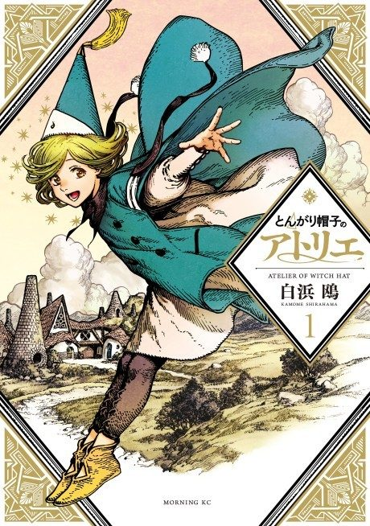

Anime
Anime
Manga2026 · Adventure, Drama, Fantasy
Witch Hat Atelier
とんがり帽子のアトリエ
AniList8.5
Animeter—
Episodes13 ep
MangaCh. 24
Anime finished. Where does the manga pick up?
Start at Chapter24
The first season ends with episode 13, covering chapters 22-23, so start at chapter 24 (volume 5). The manga is still ongoing.
123ongoing
Season 1Start reading here